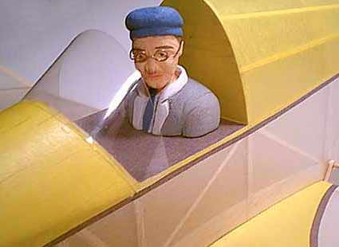
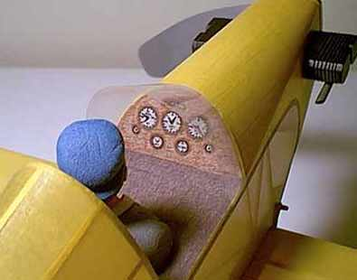

The model was built stock from a Micro-X kit.
| Weight | - | 40 grams empty |
| Span | - | 26" |
| Motor | - | 4 strands of .108" x 40" |
| Prop | - | 9.5" Union, clipped to 9" and reshaped |
| Best indoor duration | - | 1:47 from R.O.G. |
Pilot is pink foam, hollowed to aprx. 1/32" thick.
glasses are copper wire dipped in thick Nitrate dope to form lenses.


Copyright 1998, Thayer Syme. All rights reserved